Każdy lek na osobnych slajdach: mechanizm, wskazania, przeciwwskazania, dawkowanie dorosłych i dzieci, działania niepożądane i pułapki.

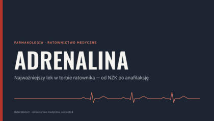
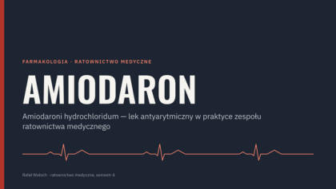


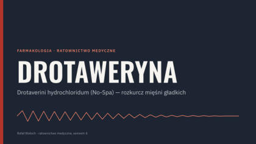
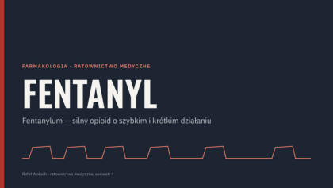
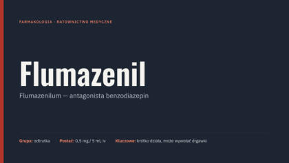

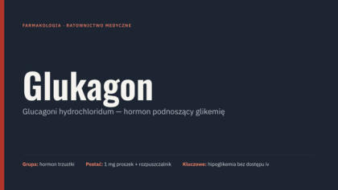
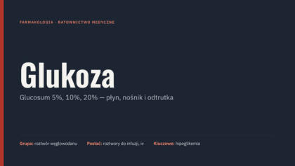


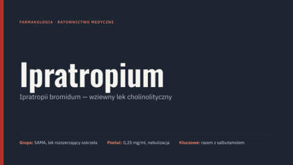
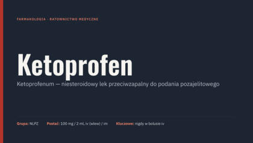

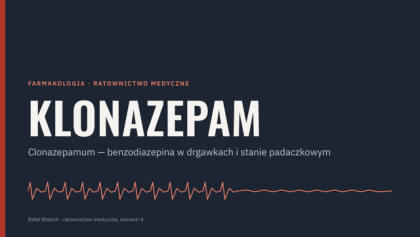
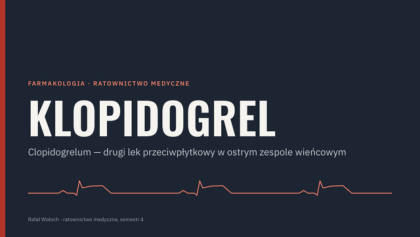
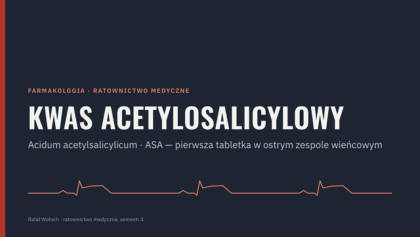


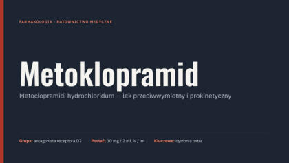

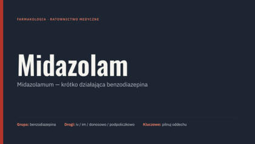
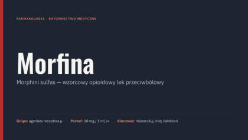
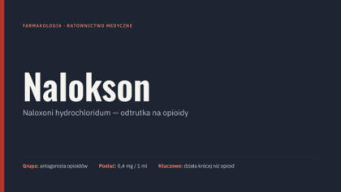


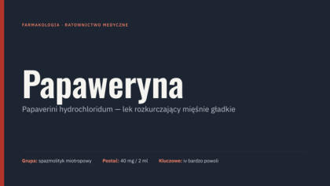
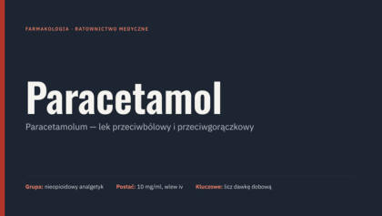


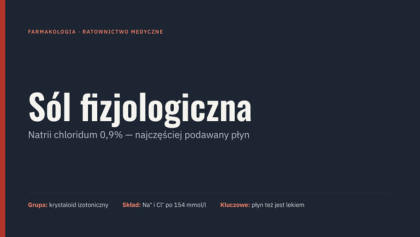


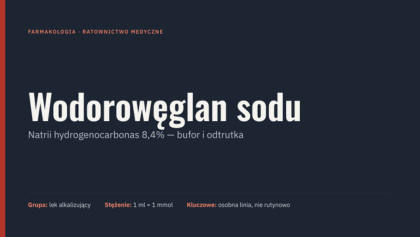

Checklista urazowa
Bezpieczeństwo, ocena miejsca zdarzenia i badanie pacjenta urazowego. Wersja kieszonkowa.
⬇ Otwórz PDF
Checklista internistyczna
Zasady bezpieczeństwa według ITLS i badanie pacjenta internistycznego. Wersja kieszonkowa.
⬇ Otwórz PDF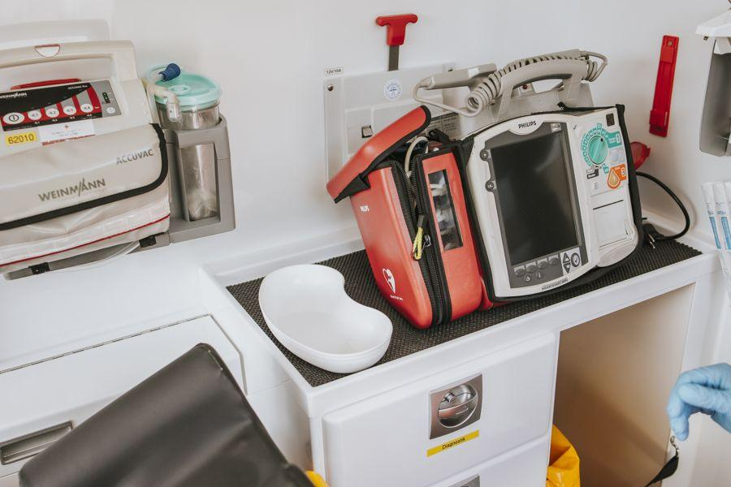
Atlas dróg oddechowych
BVM i chwyt C-E, Guedel, rurka nosowa, i-gel z tabelą rozmiarów i kolorów, intubacja z kapnografią, konikotomia CICO.
→ Otwórz atlas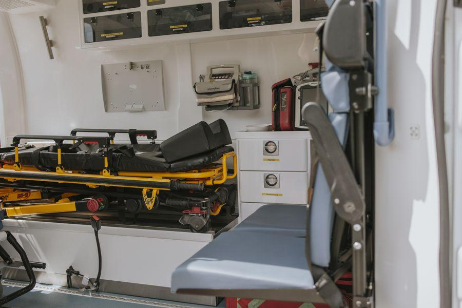
Neurologia – objawy
Babiński, sztywność karku, Kernig, Brudziński, Lasègue, Romberg, BE-FAST i źrenice: jak badać i co znaczy wynik.
→ Otwórz stronęWażne: materiały mają charakter edukacyjny i nie zastępują aktualnych wytycznych ERC/PRC, rozporządzeń Ministra Zdrowia ani procedur Twojego pracodawcy. Przed podaniem leku zawsze sprawdź aktualną ChPL. Błąd w treści? Napisz: biuro@medkrak.pl